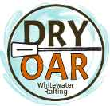

Overview
Purpose
The purpose of this website is to build revenue and promote white-water rafting at Dry Oar White Water Rafting. The website will feature a booking service and information on all the activity packages, gifts and resources available for purchase. The site will enable potential customers to complete their bookings online, make enquiries and share images of their experiences. The site will contain a shop to enable payment. There will be details about the company policies on cancellations, insurance and refunds. The main function of the site is to allow customers to prebook their activities to ensure that the service is prepaid and remains viable.
Audience
The audience of this website are adults and teenagers seeking a white-water rafting experience at Dry Oar White Water Rafting. The main audience will be physically fit with the ability to swim and have some experience in water sports. Other customers will include those new to water sports that are looking for a new and thrilling experience. The service will also offer bespoke sessions for disabled people as Dry Oar White Water Rafting value inclusion and seek to make the service widely accessible. The site is also aimed at corporate groups as it offers unique team building activities and experiences.
- Individuals with a taste for adventure
- Corporate team building groups
- Friend and Family groups
Branding
Website Logo
Branding text
Style Guide
Color Palette
Palette URL:
https://coolors.co/palette/032026-16697a-c3510a-82c0cc| Primary | Secondary | Accent 1 | Accent 2 |
|---|---|---|---|
| #271712 | #16697A | #C3510A | #82C0CC |
Typography
Heading Font: Acme
Paragraph Font: Roboto
Normal Paragraph Example
The best white water rafting in England.
Colored Paragraph Example
Experience the wonder of white water rafting.